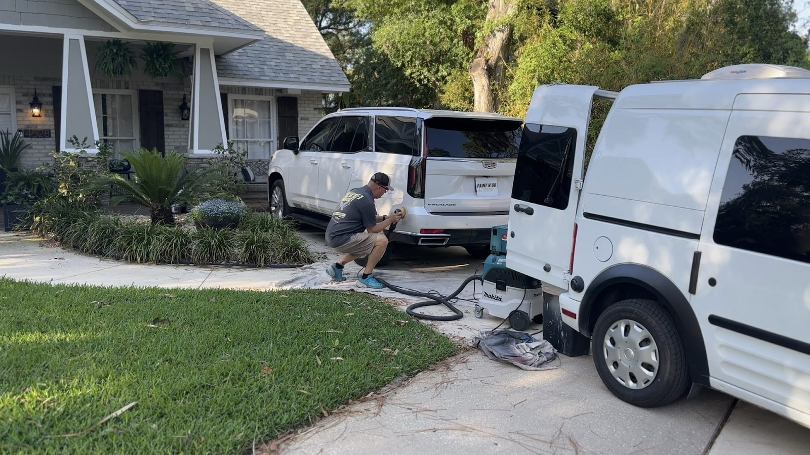
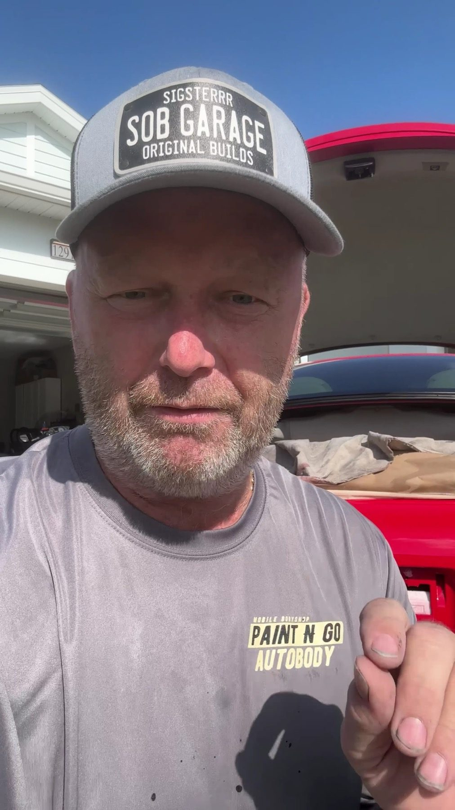
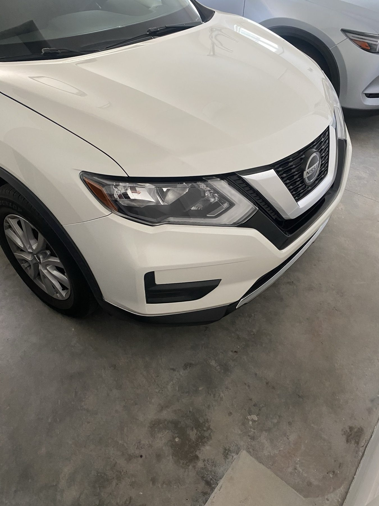
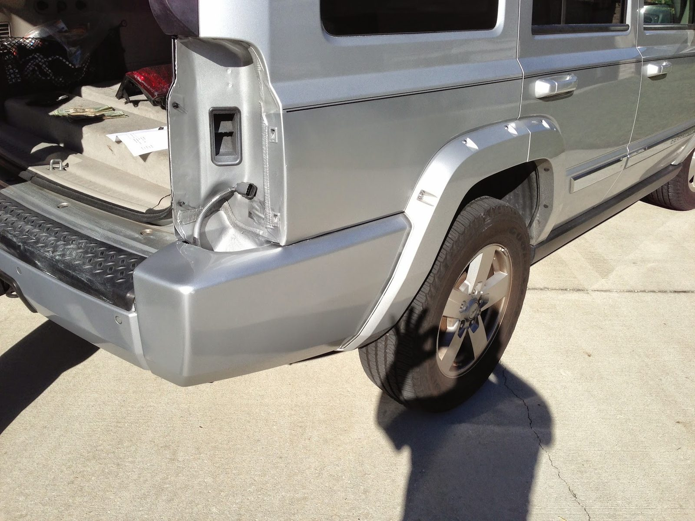
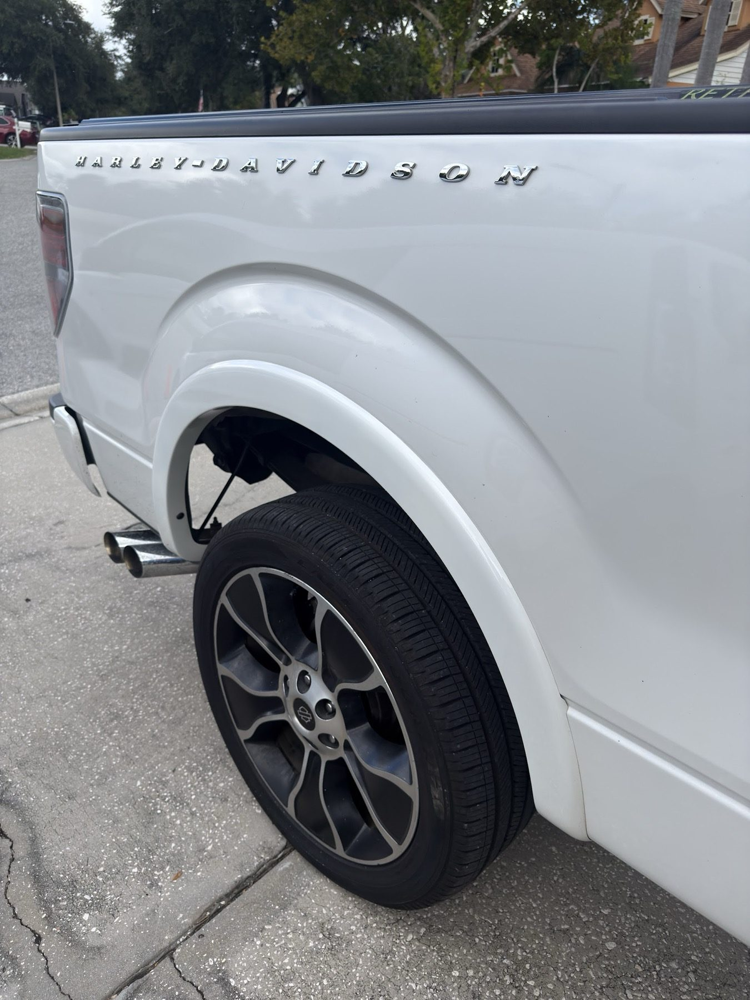
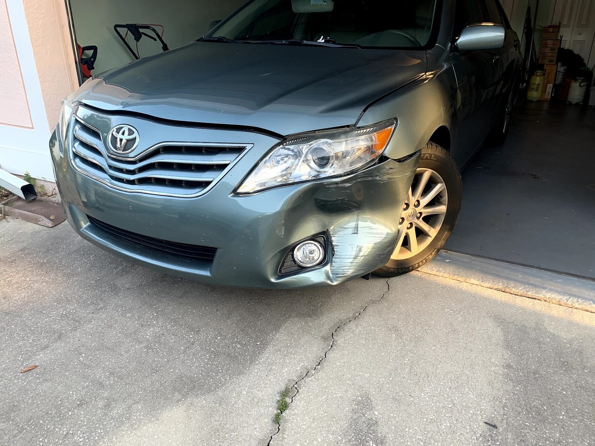
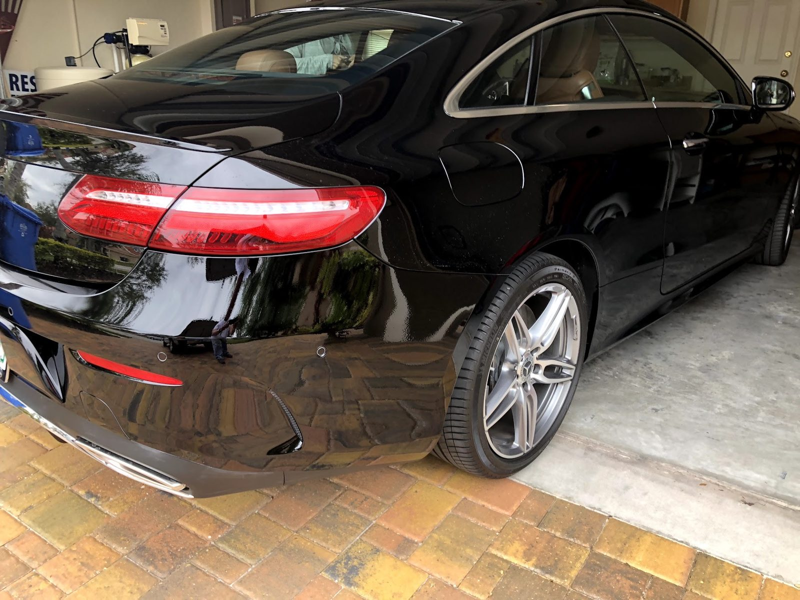
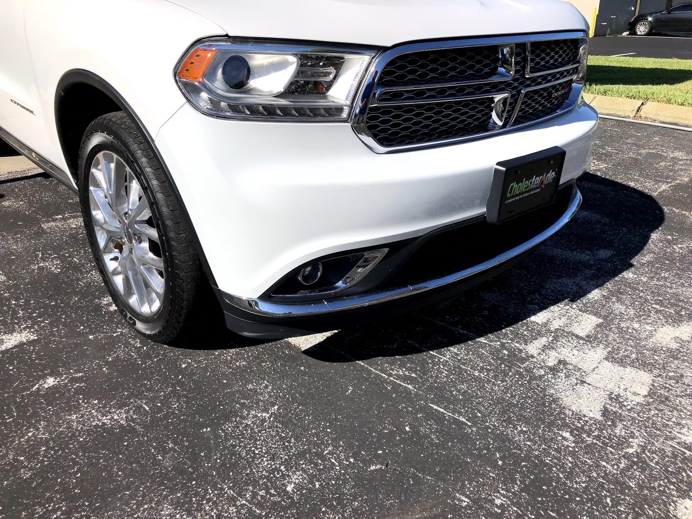

Multi-point inspection
Wesley Chapel, FL
- Checked
- Watch
- Fix now
Mobile auto body · Wesley Chapel, FL
The body shop comes to you.
Bumper, fender and door repair at your home or work.

- Shop
- Paint N Go Inc
- Rating
- 4.9/ 5
- Signed off by
- 293Google reviews
- Call
- (813) 921-7577
- Bumpers
- Fenders
- Doors
- Trunk and hatch
- Quarter panels
- Paint damage
Systems we check
What we repair
Cosmetic body damage, fixed in your driveway.
- Checked
- Watch
- Fix now
-
Checked
Bumper repair
Dents, cracks, scrapes and paint damage on eligible bumper covers.
-
Checked
Fender repair
Cosmetic dents, creases and paint damage, repaired where the vehicle sits.
-
Checked
Door repair
Scrapes, dents and paint transfer on eligible doors.
-
Checked
Trunk and hatch
Eligible cosmetic damage on trunks, liftgates and rear hatch panels.
-
Checked
Quarter panels
Selected dents and paint damage without a shop visit.
-
Checked
Repair correction
Assessment of eligible cosmetic defects from a previous repair.
How it works
Damage to done in three steps
- 1
Send your photos
Show the whole damaged area and include a close-up.
- 2
Receive your estimate
We review the damage and text you a written estimate.
- 3
Schedule the repair
Pick a time at home or work.
The record
- 4.9Google rating
- 293Google reviews
- 2001Serving Tampa Bay since
Signed off
Reviews
4.9 / 5 from 293 Google reviews
Note
The guy that did the work on my Honda civic was a young man named Aiden. He did a wonderful job on my car. It looks brand new. The difference in before and after is insanely huge. The owner, Siggy, was also very nice, easy, and helpful to talk to. I highly recommend this company if you are in the local Wesley Chapel area. Amazing job👍
Note
Called Paint N Go and they came to our home the very same day to fix the dent in our car. Aiden did an amazing job! He was professional, friendly, and such a nice young man. The service was super quick, and the results were fantastic. We did not have it painted, only removed the dent at an affordable price. Highly recommend!
Note
“Highly recommend Paint and Go! They came out and fixed my front bumper right at my home, which was a huge convenience compared to leaving my car at a body shop for days. The price was very reasonable, customer service was top notch, and Aiden was knowledgeable, professional, and great to work with. The whole process was easy and stress-free, and the repair turned out great!”

The shop
Driven by quality. Defined by trust.
Not a brick and mortar shop. The workshop comes to your driveway or workplace, so your car stays with you.
We tell you when damage needs a traditional body shop instead.
- Written estimate by textSend photos, get your estimate.
- Repaired where you parkAt home or at work.
- Honest about fitWe say when a body shop is the better call.
Photos
Cars we've worked on












Find us
Find us in Wesley Chapel
30339 Randall Manor St, Wesley Chapel, FL 33545
We drive to you across Tampa Bay. Send photos first, then schedule a time.